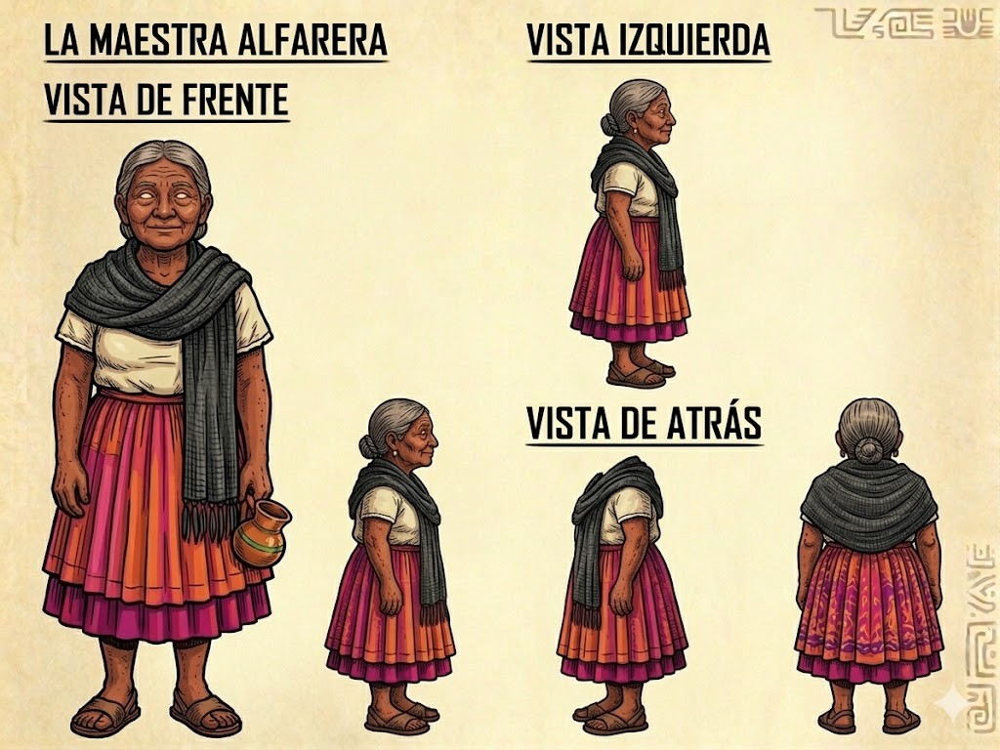
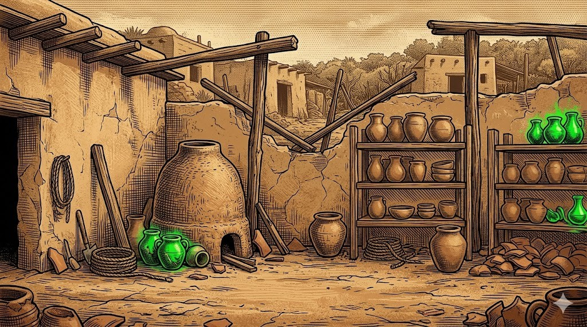
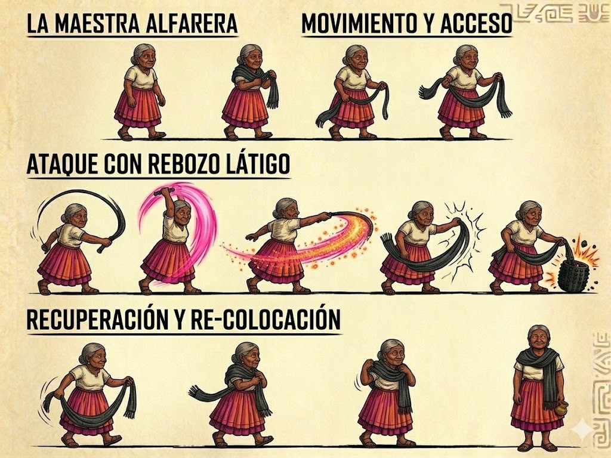
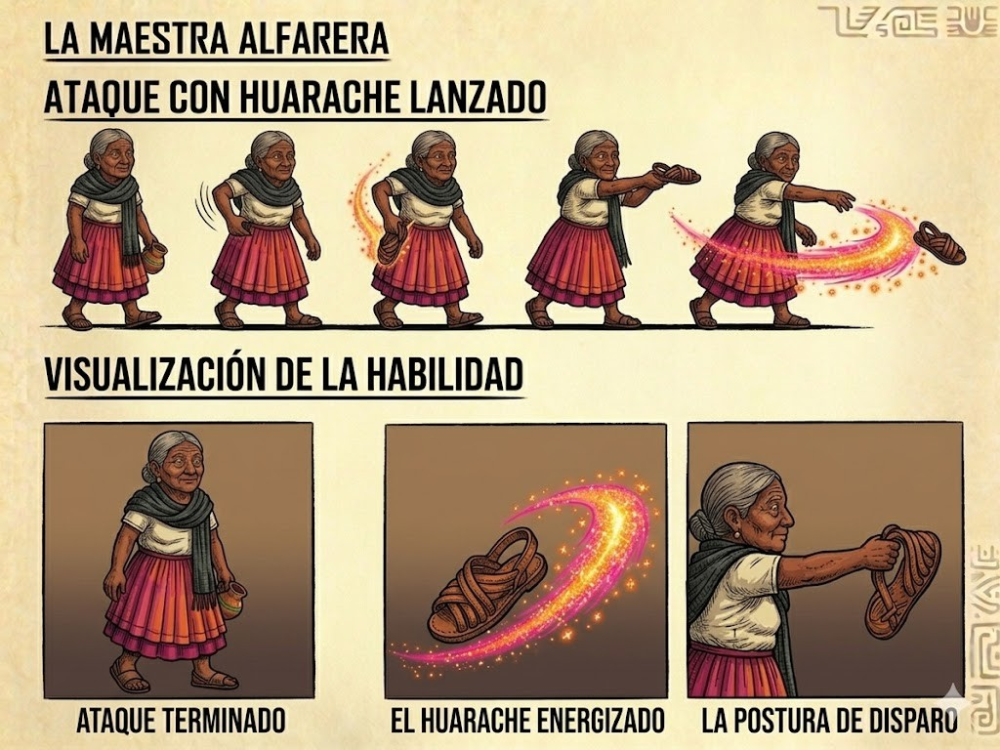
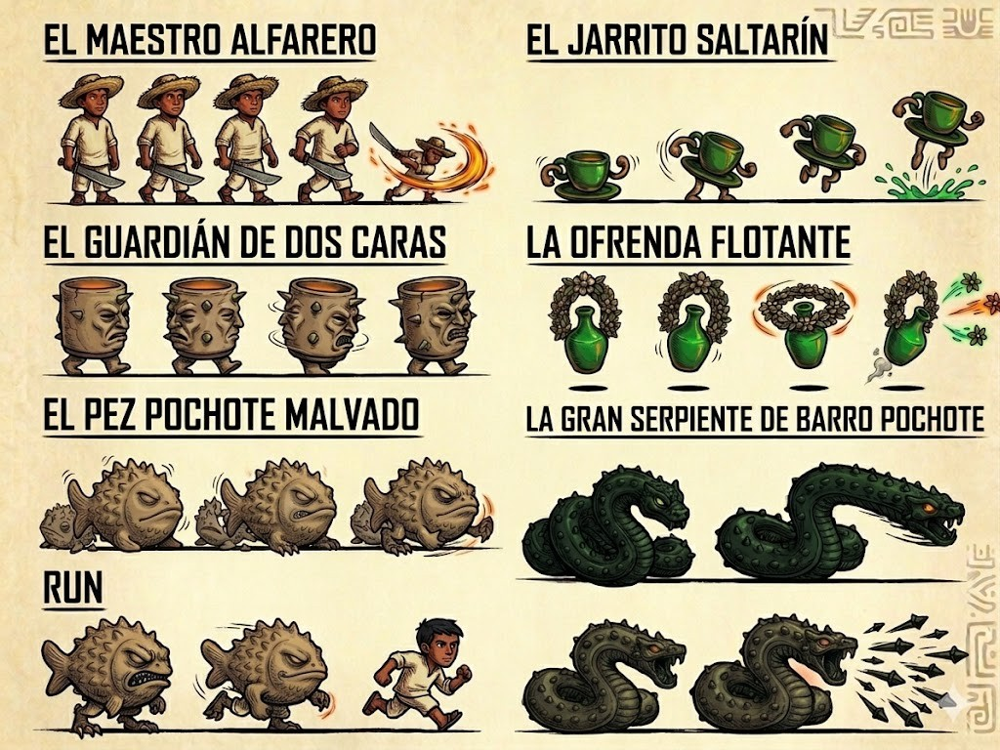
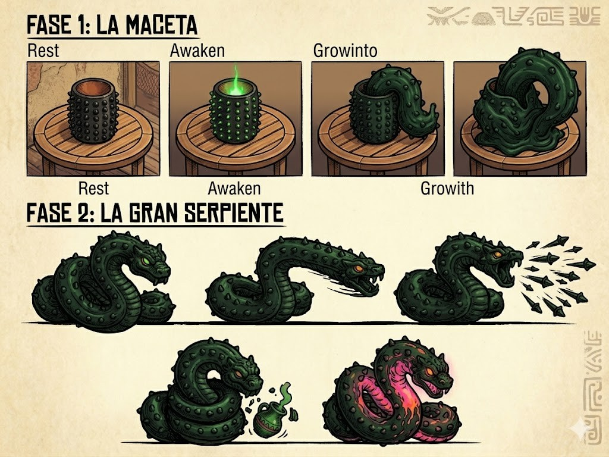

Título alterno: Barro Verde Mystery

Una maestra alfarera de Atzompa combate piezas de barro corruptas por una energía mística, usando su rebozo y su huarache en un side-scroller 2D con estética de grabado Posada y acentos de esmalte vidriado neón.
Gancho de 30 segundos · cultura + combate artesanal + identidad visual única.
Fantasía del jugador: defender el oficio y el taller; la violencia es artesanal (rebozo, huarache), no militar.
Referencias de sensación (no copia): Mega Man (proyectil + melee) · Shovel Knight (legibilidad) · Hollow Knight (peso de jefe).
Explorar ──▶ Combatir barro ──▶ Liberar
patio/taller corrupto esmalte / efectos
│
▼
◀─────────────── Enfrentar al jefe
Derrotar o interactuar libera esmalte y ataques según las propiedades físicas del enemigo.
| In — v0.1 jugable | Out — post-slice |
|---|---|
| 1 nivel: taller + patio de secado (Atzompa) | Más niveles / mapa mundo |
| Maestra: rebozo + huarache | Nuevas habilidades, upgrades |
| 4 enemigos + jefe Serpiente (2 fases) | Narrativa larga, cutscenes |
| HUD mínimo + 3 pantallas | Tienda, monetización |
| NPC Maestro Alfarero (tutorial) | Diálogos extendidos |
| Arte: personaje + bestiario + escenario (listo) | Localización multi-idioma |

Taller + patio de secado: adobe mate, horno de barro, estantes con piezas de barro verde, telas de manta. Acentos de esmalte neón solo en las piezas corruptas.
[ Entrada taller ] ──▶ [ Patio de secado ] ──▶ [ Arena del jefe ]
tutorial NPC oleadas + esmalte maceta → serpiente

~55 años · chongo canoso · blusa de manta · falda magenta/naranja · rebozo gris · huaraches.

walk + run ya diseñados.Ampliar narrativa post-slice. La fila "RUN" del concept es solo su ciclo de carrera.

| Enemigo | Rol |
|---|---|
| Jarrito Saltarín | Spam / aprendizaje |
| Guardián Dos Caras | Melee pressure |
| Ofrenda Flotante | Ranged |
| Pez Pochote | Flank / embestida |
| Gran Serpiente | Jefe 2 fases |

Rest → Awaken → Growinto → Growth. Transformación in-game (skippable).
Mordisco rápido · ráfaga de picos · ventana vulnerable con núcleo rosa mexicano.
| Fase | Duración | Entregable |
|---|---|---|
| 1. Pre-producción | 2–3 sem | GDD slice, paper proto, lista assets |
| 2. Prototipo gris | 3–4 sem | Movimiento, hitboxes, 1 enemigo |
| 3. Producción | 6–8 sem | Nivel, 4 enemigos, jefe, arte final |
| 4. Polish | 2–3 sem | Juice + audio + build de prueba |
El riesgo de arte de personajes ya está resuelto.
Gameplay · Art Bible · Tech & producción
Detalle completo en docs/GDD.md, docs/art-bible.md y docs/backlog.md.
| Sistema | Valor v0.1 |
|---|---|
| Vida del jugador | 4 corazones (8 medios) |
| Daño rebozo | 2 dmg · 1-hit Jarrito · stagger Guardián |
| Daño huarache | 3 dmg · cooldown 1.5 s · munición ∞ |
| Esmalte en suelo | slow 50% por 2 s |
| i-frames tras golpe | 0.8 s |
| Checkpoints | 2 antes del jefe |
Valores placeholder — se calibran en el prototipo gris.
| Enemigo | HP | Ataque | Al morir |
|---|---|---|---|
| Jarrito Saltarín | 2 | Brinco + salpicadura | Charco esmalte (slow) |
| Guardián Dos Caras | 8 | Lengua látigo / giro de picos | — |
| Ofrenda Flotante | 4 | Flores de barro (proyectil) | — |
| Pez Pochote | 5 | Embestida de picos | — |
| Serpiente (jefe) | 40 | Mordisco / ráfaga picos | Fin de nivel |
| Asset | Estado |
|---|---|
| Maestra rebozo / huarache | Concept listo |
| Maestra walk / idle / hurt / death | Pendiente (derivar) |
| Bestiario L1 (4 + NPC) | Concept listo |
| Jefe fase 1 + fase 2 | Concept listo |
| Tileset / ambientación (taller+patio) | Concept listo |
| Sprites game-ready, VFX, UI/HUD | Pendiente |
Referencia de consistencia para sprites y tileset faltante. Texto íntegro en docs/art-bible.md.
Estilo: imitación de grabado tradicional en madera/metal (xilografía /
linograbado, José Guadalupe Posada). Contornos oscuros, gruesos y texturizados.
Volumen SOLO por achurado (cross-hatching) y puntos de grabado.
Paleta tierra mate (adobe, sepia, ocre, terracota, crema de manta) + acentos
neón saturados: Verde Esmeralda Vidriado, Rosa Mexicano, Naranja Cempasúchil,
Azul Neón. Fondo de hoja: pergamino oaxaqueño texturizado.
Escenas: MainMenu → Level01_Atzompa → BossArena. Autoloads: GameState, AudioManager.
Oaxaca Mystery — vertical slice
Repo: oaxaca-mystery/ · GDD, art bible, backlog y proyecto Godot incluidos.